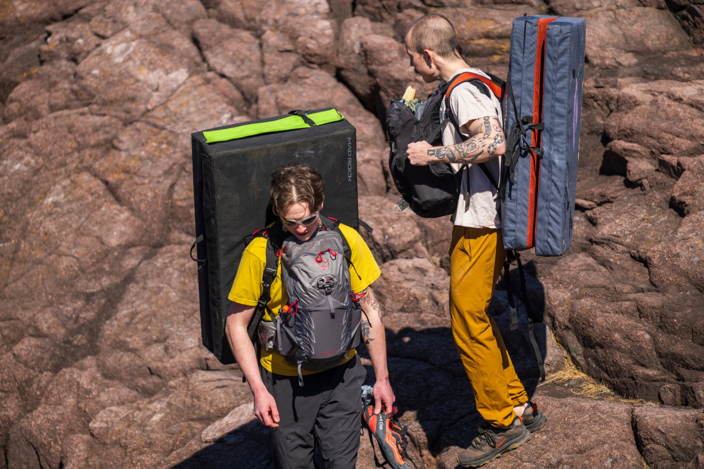
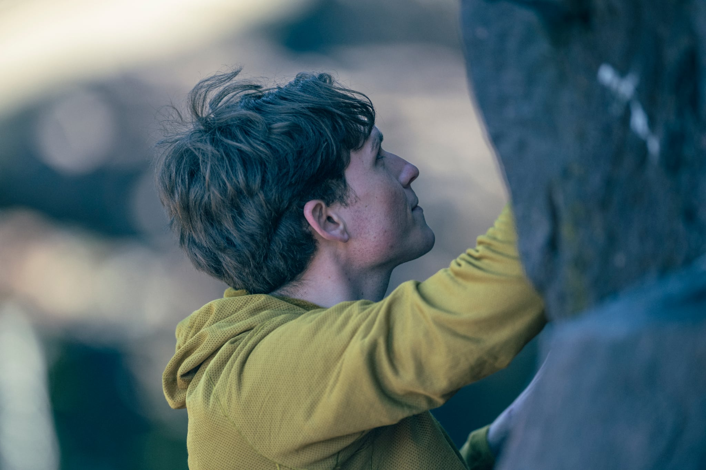
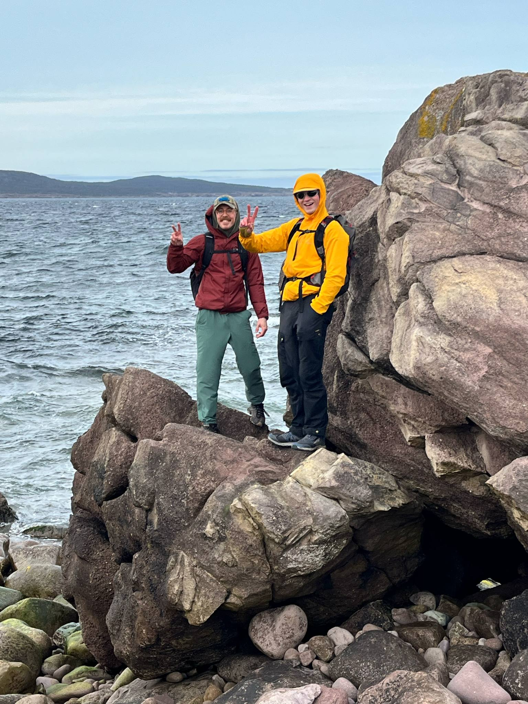
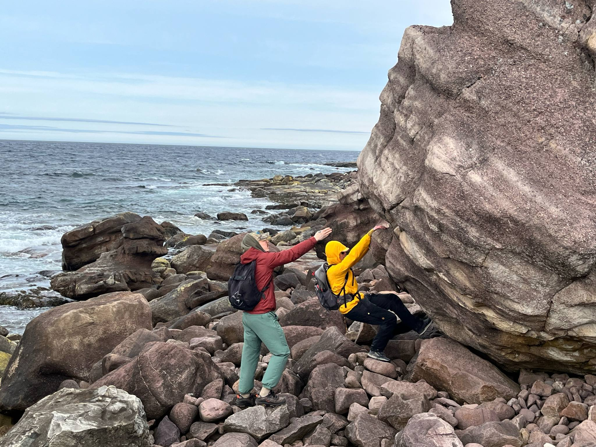

I wanted to share my first couple of climbing adventures outdoors. Since I started bouldering indoors in September last year, I have been so excited to try climbing outdoors. I had a lot of time to improve my technique and get stronger over the winter, and although the weather on the Avalon can be pretty gross, I've been lucky enough to get outside a couple times already. My first time out was with new friends Matt Cramm and Mitchell at the Marine Lab wall on 2025-04-12. I was able to do my first couple of real boulders: two V0s and one V1. It was exciting to get some real outdoor climbing done and feel what it's like to climb on real Newfoundland rock. It was a great day for weather, and we got lucky in that we weren't alone at the crag. Some other regulars from The Cove showed up, and a local photographer named Lisa Sells was nearby as well. She was interested in what we were doing, as she had never heard of bouldering before. She asked if she could take our pictures, and we were more than happy to get some cool pictures taken!

We came prepared.

Getting chalked up, ignore my hair line!

Matt in the zone.
//////////
A second outing on 2025-05-15 didn't involve much climbing but was exciting nonetheless. About a 5km hike in from the Petty Harbour trailhead on Motion Path there lies several large boulders on the rocky beach. Matt scoped these out earlier in the year, and was surprised that he could not find any records online of anyone having climbed them, despite their size and interesting features. It didn't take much encouragement to get me out there and Lillith tagged along for the hike. After sizing them up together, we found some problems that look like they are worth coming back for. We are both new to outdoor bouldering and not used to spotting new routes, so we are hoping for some friends to join us next time. Although we weren't prepared for hard climbing, we did take our climbing shoes and couldn't resist trying something easy. Matt said he wanted to try climbing a slabby boulder that was nearby, within sight of the others. We headed over and found that we could traverse 3 sides of the boulder. Somehow I slipped when I tried it and didn't bother to do it from the start again, but Matt sent it and as far as we know, made the first ascent of Matt's Motion, V1. Topo of the problem is shown below, as well as a few shots of the beach boulders. I'm hoping to share more about the other boulders soon!

Starting on the large undercling, traverse to the right using obvious holds and bad feet.

Continue around to the face with the signage...

Around the corner to the third face, top out to the left of the chute.

Posing!

Project for another day.